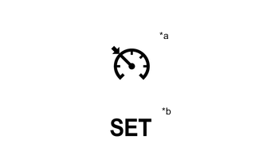

CRUISE CONTROL SYSTEM
This system is controlled by the hybrid vehicle control ECU, and control is performed using the throttle body with motor assembly and motor drive force. The hybrid vehicle control ECU controls the following functions: ON-OFF, - (COAST)/SET, + (ACCEL)/RES (RESUME), CANCEL and vehicle speed operation.
The hybrid vehicle control ECU compares the vehicle speed from the speed sensor with the stored vehicle speed set using the cruise control main switch. The hybrid vehicle control ECU instructs the throttle valve motor of the throttle body with motor assembly to close the valve and the motor generator to decrease the motor drive force when the vehicle speed is greater than the stored speed, and instructs the throttle valve motor to open the valve and the motor generator to increase the motor drive force when the vehicle speed is less than the stored speed.
The hybrid vehicle control ECU receives signals such as ON-OFF, - (COAST)/SET, + (ACCEL)/RES (RESUME), and CANCEL from the cruise control main switch and executes the command.
The hybrid vehicle control ECU illuminates the combination meter assembly cruise control indicator when the cruise control system is turned on using the cruise control main switch (ON-OFF button).
The hybrid vehicle control ECU turns off the combination meter assembly cruise control indicator and displays a warning message when a malfunction occurs during cruise control driving.

| *a | Cruise Control Indicator |
| *b | Cruise Control SET Indicator |
The hybrid vehicle control ECU illuminates the combination meter assembly cruise control SET indicator when vehicle speed control begins after the cruise control main switch is pushed to -SET while driving.
FUNCTION OF MAIN COMPONENTS
The main components of the cruise control system have the following functions:
| Component | Function | |
|---|---|---|
| Cruise Control Main Switch | ON-OFF Button | Turns the cruise control system on and off. |
| CANCEL Switch | A cancel signal is sent to the hybrid vehicle control ECU when the switch is operated. | |
| +RES Switch | Acceleration and stored speed resume signals are sent to the hybrid vehicle control ECU when the switch is operated. | |
| -SET Switch | Deceleration and vehicle speed setting signals are sent to the hybrid vehicle control ECU when the switch is operated. | |
| Skid Control ECU (Brake Booster with Master Cylinder Assembly) |
|
|
| Hybrid Vehicle Control ECU | Controls all functions of the cruise control system in accordance with the signals received from switches, sensors and ECUs. | |
| Combination Meter Assembly | Cruise Control Indicator |
|
| Cruise Control SET Indicator | Illuminates when the vehicle speed is set. | |
| Multi-information Display |
|
|
| Throttle Body Assembly | Throttle Control Motor | Adjusts the throttle valve opening angle in accordance with signals received from the hybrid vehicle control ECU. |
| Throttle Position Sensor | Outputs the throttle valve opening angle to the hybrid vehicle control ECU. | |
| Speed Sensor | Outputs wheel speed signals to the skid control ECU (brake booster with master cylinder assembly). | |
| Accelerator Pedal Sensor Assembly | Outputs accelerator pedal depression angle to the hybrid vehicle control ECU. | |
| VSC OFF Switch | Outputs VSC off signals to the skid control ECU (brake booster with master cylinder assembly). | |
| Shift Lock Control Unit Assembly | Shift Sensor | Outputs the shift sensor signals to the hybrid vehicle control ECU. |
| Stop Light Switch Assembly | Outputs brake pedal depressed signals to the hybrid vehicle control ECU. | |
OPERATION OF CRUISE CONTROL
The cruise control system has the following control functions:
| Function | Outline |
|---|---|
| Constant Speed Control | The hybrid vehicle control ECU compares the actual vehicle speed and the set speed and if the vehicle speed is less than the set speed, it uses the throttle control motor to increase the throttle valve opening angle. |
| Set Control | The vehicle speed is stored and speed control is performed when the cruise control main switch is pushed to -SET while driving with the cruise control system on, and the vehicle speed is within the set speed range. |
| Low Speed Limit Control | The low speed limit is the lowest speed that cruise control can be set at and it is designed to be approximately 40 km/h or 25 mph. The cruise control system cannot be set below that speed. If the vehicle speed drops below that speed while the cruise control is operating, speed control by the cruise control system will be canceled automatically. However, the set speed is kept in memory. |
| High Speed Limit Control | The highest possible set speed is approximately 200 km/h or 125 mph. The cruise control system cannot be set when the vehicle speed is over the high speed limit. Also, + (ACCEL)/RES (RESUME) cannot be used to increase the speed beyond the high speed limit. |
| - (COAST) Control | When the cruise control system is controlling vehicle speed and the cruise control main switch is pushed to -SET and held in that position, the cruise control system sends a "throttle valve opening angle 0°" demand signal to the hybrid vehicle control ECU. Following this, the vehicle speed is stored and maintained when the cruise control main switch is released. |
| Tap-down Control | When the cruise control system is controlling vehicle speed and the cruise control main switch is tapped to -SET (for approximately 0.6 seconds), the stored vehicle speed decreases by approximately 1 km/h or 1 mph for each time the switch is tapped. When the cruise control main switch is tapped to -SET and the difference between the current and stored vehicle speed is more than 5 km/h or 3 mph, the current vehicle speed is stored and speed control is performed. |
| + (ACCEL) Control | When the cruise control system is controlling vehicle speed and the cruise control main switch is pushed to +RES and held in that position, the cruise control system sends a signal to the hybrid vehicle control ECU to operate the throttle valve motor of the throttle body with motor assembly to open the throttle valve. Following this, the vehicle speed is stored and maintained when the cruise control main switch is released. |
| Tap-up Control | When the cruise control system is controlling vehicle speed and the cruise control main switch is tapped to +RES (for approximately 0.6 seconds), the stored vehicle speed increases by approximately 1 km/h or 1 mph for each time the switch is tapped. When the cruise control main switch is tapped to +RES and the difference between the current and stored vehicle speed is more than 5 km/h or 3 mph, the stored vehicle speed will not be changed. |
| RES (Resume) Control | If control of vehicle speed by the cruise control system was canceled due to any of the manual cancel conditions (other than turning the cruise control system off using the cruise control main switch (ON-OFF button)), and if the vehicle speed is between the low and high speed limits, the stored vehicle speed from the time of cancellation will be resumed and maintained when the cruise control main switch is pushed to +RES. |
| Manual Cancel Control | Performing any of the following cancels the cruise control system control of vehicle speed (the stored vehicle speed in the hybrid vehicle control ECU is maintained).
|
| Automatic Cancel Control | This system has an automatic cancellation function (fail-safe). |